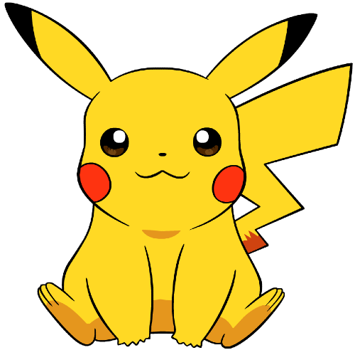

Пикачу́ (яп. ピカチュウ Пикатю:, англ. Pikachu) — существо из серии
игр, манги и аниме «Покемон», принадлежащей компаниям Nintendo и Game
Freak. Пикачу, являющийся одним из особенных существ вымышленной
вселенной — покемоном, был создан японским игровым дизайнером Кэном
Сугимори вместе с командой разработчиков Game Freak и впервые появился
в компьютерных играх Pokémon Red и Blue, а затем и в последующих
сиквелах. Пикачу считается одним из самых узнаваемых и популярных
покемонов, так как является официальным талисманом франшизы, и в
последние годы он стал иконой японской поп-культуры[1]. Пикачу
эволюционирует из другого покемона, Пичу, а сам Пикачу впоследствии
может эволюционировать в Райчу. В вымышленном мире покемонов Пикачу
часто живут в домах, лесах, на равнинах, иногда в горах и на островах,
а также на заброшенных электростанциях по всему миру[2]. Будучи
покемоном электрического типа, Пикачу может накапливать в своих щёчках
электричество и при необходимости атаковать с его помощью[3].
Внутриигровой Покедекс, а также Покедекс в аниме утверждает, что
Пикачу является покемоном-мышью.